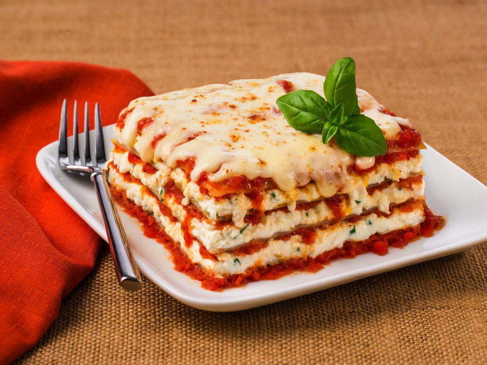

Odin Recipes
Margherita Pizza

I am sure we are all familiar with pizza.
Ingredients
- Pizza Dough
- San Marzano Tomatoes
- Fresh Mozzarella Balls
- Fresh Basil
- Olive Oil & Salt
- Preheat oven to 500 degrees Fahrenheit
- Prepare the dough
- Place mixing bowl into the sink and pour the canned tomatoes into the bowl,
juices and all. Crush the tomatoes by hand and spread about 3/4 cup of the tomato
sauce evenly over each pizza, leaving about 1 inch bare around the edges.
- If mozzarella is packed in water make sure to drain it off and gently dry onto a clean towel or paper towel.
If working with large mozzarella balls, tear them into smaller 1-inch balls and distribute it over the pizza,
concentrating around the center so it melts towards the edges.
- Bake the pizzas on the top rack of the oven until the crust is golden and cheese is just turning golden.
Usually around 10-12 minutes, but can take less if you are using a baking stone/steel.
- Generously top each pizza with fresh basil, as well as a drizzle of olive oil, a sprinkle of salt,
and red pepper flakes as desired. Slice the pizza and enjoy! (Leftover pizza will keep well in fridge for up to 4 days.)
Fettucine Alfredo
Mac and cheese's older brother.
Lasagna

Cake baker's attempt at spaghetti and meatballs.
Gelato

If you want ice cream, but want it more Italian then this is for you!